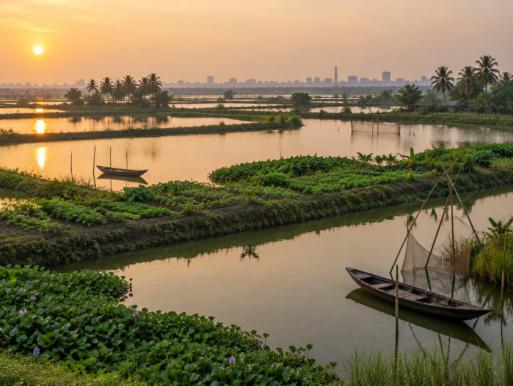

You know the name of your village. Somewhere in it, a young woman or a
young man is about to build a farm. This is an invitation to stand behind them — for one
season, with the logs open the whole way.
₹1 Lakh — that is ₹1,00,000 (approximately US$1,000)
Paid as five monthly instalments of ₹20,000
Bharatiya Krishak Samaj Since 1955 — seven decades for the Indian farmer
KarmYog for the 21st Century
West Bengal · Season 1 · 2026–27
In one page
The whole of it, briefly
Pravasi Krishi Bandhu
If you read nothing else, read this
page. Everything after it is evidence for what is written here.
What it is
The Krishi Ratna League is a championship for farms, run in the
format that made cricket unmissable. Across West Bengal's 294 assembly
constituencies, 5,000 young women and men will each build a
Smart Integrated Farm — and be mentored, verified and graded through one full
season, Durga Puja 2026 to Durga Puja 2027.
Why
To make farming aspirational. A subsidy makes a farmer solvent
for a year; a championship makes a nineteen-year-old in Bankura aspire to be a
farmer, and gives rural Bengal something to aim at.
Your part
You stand behind one of them — one named young person, in the
bheete (ভিটে) your own family came from. You will be shown
three applicants and you pick who you back.
The amount
₹1 Lakh — ₹1,00,000 for the season, paid as
five monthly instalments of ₹20,000. ₹90,000 goes to the farm.
Six per cent becomes prize money; administration and everything around it is four per cent.
What you see
A named farm and farmer. Open logs — activity, photographs, expense ledger. A
progress report against every instalment. The farmer's own video messages. And an invitation
to the Season 1 awards, held before Durga Puja 2027.
Who stands behind it
Bharatiya Krishak Samaj, founded 3 April 1955 by
Dr Panjabrao S. Deshmukh, appointed Agriculture Minister in 1952 — seven
decades for the Indian farmer. National President Shri Krishan Bir Chaudhary
sits on the Government of India's Minimum Support Price Committee. The West
Bengal chapter is led by MahAcharya Shri Sourabh J. Sarkar, Founder of KarmYog
for the 21st Century.
The prizes
₹3 crore in all — ₹1 crore for the best farm, ₹1 crore for the
best regional team, ₹1 crore across other categories. Farms are graded on
Satya, Mangal, Sundar, Samriddhi.
The next step
Raise your hand. Nothing is asked of you now except your
interest and your bheete — no payment, no commitment. A twenty-minute call follows.
₹10 croreTo be raised before Durga Puja 2026 — one thousand farms
5,000Smart Integrated Farms across Bengal in Season 1
Pravasi Krishi BandhuExecutive Summary · 02
The three-year roadmap
Sthapana · BangaManthan · RashtraManthan
01 · The arc
Everything in this document sits inside three phases. Each milestone is a Durga
Puja, because a Puja cannot be postponed for a delayed approval or a slow quarter.
Year one · 2026
Sthapana
স্থাপনা
Establishment. The League launches at Durga Puja 2026 on a working model
farm. Applications open across all 294 constituencies, and the first 5,000 Smart Integrated
Farms begin.
Year two · 2027
BangaManthan
বঙ্গমন্থন
Scaling across Bengal. Season 1 is graded and awarded before Durga Puja
2027. The model proven in one season is carried into every district of Bengal.
Year three · 2028
RashtraManthan
রাষ্ট্রমন্থন
Scaling across India. The Bengal Model established nationally by Durga
Puja 2028 — the point at which Bengal has something the rest of the country copies.
The dates inside it
14 September 2026Sthapana
The Krishi Ratna League is launched by the Hon'ble Minister of
Agriculture, Government of West Bengal, Shri Dudh Kumar Mondal, with the
Hon'ble Minister of State for Agriculture & Horticulture, Shri Amaya
Kisku. Applications open.
10 October 2026Mahalaya
The model farm at Munshi Bheri, in the East Kolkata Wetlands,
is complete. Six weeks earlier it was a dump yard.
From 16 October 2026Durga Puja
The Puja whose theme is Krishi Samaj — for the farmers. The
pandal stands on the working farm. Season 1 begins.
2026 – 2027Season 1
5,000 Smart Integrated Farms built, mentored, verified and
graded across 294 constituencies. This is the season your farm runs in.
Before Durga Puja 2027BangaManthan
Season 1 awards — ₹3 crore, the best farm, the best team. Held
deliberately before the Puja, so that Pravasi Bandhus can attend the ceremony
and then travel on to their own bheete for the Pujo.
Durga Puja 2028RashtraManthan
The Bengal Model established across India.
Bengal comes home.
Pravasi Krishi BandhuThe Roadmap · 03
Pratyaavartan (প্রত্যাবর্তন)
The Return
02 · Why you
Most of us did not leave Bengal. We left a village, and Bengal happened to be
around it.
There is a word for the place — bheete (ভিটে). The plot the family held, the
pond behind it, the name of the block you still give when an elder asks where you are really
from. You may not have stood on it in many decades. You can still draw it.
What has happened to those places is not a mystery and it is not anybody's single fault. The
young people left, as you left. The land stayed, and got smaller with each division. The ones
who remained were told, in a hundred quiet ways, that farming was what you did when nothing else
worked out. A boy who wanted to stay had no reason he could say out loud.
Agriculture in Bengal did not fail for want of soil, or rain, or hands.
It failed for want of aspiration.
That is the specific thing this sets out to change, and it is why it takes the shape of a
league rather than a scheme. A subsidy makes a farmer solvent for a year.
A championship makes farming aspirational — something a young person in Bengal
might actually want, with a team, a table, a season, and a name that gets read out.
We are not trying to rescue agriculture. We are trying to make a nineteen-year-old in Bankura
aspire to be a farmer, to raise the aspirations of rural Bengal itself, and to
build aspirational farms worth that ambition.
Pratyaavartan (প্রত্যাবর্তন) means homecoming. Not the aeroplane kind. It is
the idea that a place can find its way back to the direction it had, and that the people who left
it are not disqualified from helping — that in fact they may be the only ones with both the
distance to see it clearly and the means to do something.
You are not being asked for charity. Charity flows down. This is closer to what an elder in
the family used to do for a promising nephew — you back the young person, you stay interested,
you ask how it went.
What this is not
This is not a donation to a general fund, and you are not buying a product. You are
supporting one named agri-entrepreneur who is setting up a Smart Integrated Farm, and you will
be able to see, month by month, exactly what happened on that piece of land.
Pravasi Krishi BandhuThe Return · 04
The moment
Why this year and not another
03 · Why now
Three things have come together in 2026 that have not been true at the same time
before.
One — the governments are aligned
For the first time in nearly five decades, the government in West Bengal
and the government at the Centre are working in the same direction. Whatever one thinks of
any party — and Bharatiya Krishak Samaj takes no position on any — agricultural reform is one
of the few fields where that alignment translates directly into what a farmer can actually
reach: schemes that arrive, approvals that move, institutions that answer.
A window like this stays open for a few years, not forever. The work should be done inside
it.
Two — agriculture never got its league
Cricket had the IPL. Music had Sa Re Ga Ma Pa. Dance had Dance India Dance. Each of them
changed what an ordinary family thought was a respectable thing for a child to spend a decade
on.
Agriculture — the one occupation that feeds the rest — has never had its equivalent. No
table, no season, no tournament, no moment where the country watched. That absence is most of
the reason a talented nineteen-year-old does not consider the land in front of him.
Three — the technology finally makes it honest
A programme like this was not practical ten years ago, because it could not be
watched. A supporter in Bengaluru had no way to know whether a farm eight hundred
kilometres away existed, or whether the money reached the soil.
That has changed. Farm activity can be logged with photographs and video, dated and located.
Expenses can be recorded against activity and published to a ledger. AI can process the volume of
evidence that five thousand farms will generate and flag what does not reconcile. This is the
first year one could promise a supporter continuous sight of a farm and actually mean it — which
is why the promise is made plainly in this document and not hedged.
The deadline is not ours
Durga Puja is a fixed date. It cannot be pushed for a delayed
approval or a slow quarter. That is precisely why the whole three-year journey is pinned to it.
A project without a non-negotiable milestone drifts. This one cannot.
Pravasi Krishi BandhuWhy Now · 05
Credentials · I
Bharatiya Krishak Samaj
Since 1955
On 3 April 1955, Dr Panjabrao S. Deshmukh —
appointed Agriculture Minister in 1952 — founded a farmers' body and deliberately kept it
outside party politics, so that it could argue with any government of the day.
Seven decades later it is one of India's leading non-partisan farmers' organisations. It is
not a political party and it is not a government scheme. It has spent that time in the
unglamorous middle ground: on committees, in consultations, in the drafting of the rules that
decide what a farmer is paid.
National President — Shri Krishan Bir Chaudhary
Member, Minimum Support Price Committee, Government of India — the body
that advises on the prices at which the country procures its food
Former Chairman, State Farms Corporation of India
Former Chairman, Indian Sugarcane Development Council, Government of India
Founder of the Small Farmers' Agribusiness Consortium (SFAC)
Former Director, NAFED
The National Advisory Board
The people who advise this organisation are the people who used to
run Indian agriculture.
Dr R.S. Paroda
Former Director General, Indian Council of Agricultural Research (ICAR)
Siraj Hussain, IAS (Retd.)
Former Secretary, Ministry of Agriculture, Government of India
Ashish Bahuguna, IAS (Retd.)
Former Chairman, Food Safety and Standards Authority of India
Dr Baldev Singh Dhillon
Vice Chancellor (Retd.), Punjab Agricultural University
Gopa Sabharwal
Vice Chancellor (Retd.), Nalanda University
The West Bengal Chapter
Established in June 2026 at the direction of the National President, and
led as State President by MahAcharya Shri Sourabh J. Sarkar, Founder of KarmYog for the
21st Century. Mrs Rinku Majumder Ghosh heads the Mahila
Mandal. The Krishi Ratna League is the chapter's first major undertaking.
Pravasi Krishi BandhuBharatiya Krishak Samaj · 06
Credentials · II
KarmYog for the 21st Century
Delivery
Bharatiya Krishak Samaj brings seven decades of standing with the Indian farmer.
KarmYog brings the thing that is harder to buy: a record of actually changing how large numbers
of people behave.
KarmYog was founded in 2008 by MahAcharya Shri Sourabh J. Sarkar — B.Tech,
IIT Kharagpur, 1990; M.A. in Education and New Media, S.I. Newhouse School, Syracuse University —
who left a corporate career to build it. Its subject has always been the same one: how a
population changes a habit.
Kolkata Jaago — Safe Drive Save Life
Road-safety culture change across the city. Reached 300+ schools and
roughly one lakh taxi drivers in Kolkata.
This is the closest precedent to what the Krishi Ratna League has to do: take a behaviour
everybody defends out of habit, and shift it — at the scale of a state, in Bengali, through
the people who already have the trust.
Jeevan-Jeevika Abhiyaan — farmers, already
Mass behaviour-change campaigns for farmers in Odisha through the
SRI farming technique; informal-sector workers in Rajasthan; vocational
trainees in Maharashtra; health workers in Howrah; safai karmacharis in Mumbai.
The Odisha work matters most here. Persuading farmers to change a planting method they
inherited is the same problem as KRL, solved once already.
OmniDEL — recognised, then funded
NSDC Best Learning Methodology Award, 2014. A
million-dollar grant from TATA Trusts, 2015.
Today OmniDEL is at the forefront of Agentic AI for informal-sector
transformation — the capability the League's Support &
Verification system is built on.
Growing things, at scale, on bad land
KarmYog Green Village, 2015 to date: roughly 12 acres of
HIDCO wasteland turned into a working eco-village — 2,000+ fruit-bearing
trees, pesticide-free vegetable production, training facilities.
50+ biophilic designs and 7+ Vatikas built across
Kolkata, Patna and Goa. Named a biophilic pioneer in India at ABID Expo 2024.
Why this pairing is the point
A farmers' organisation with seven decades of institutional standing, and a movement with
eighteen years of getting ordinary people to do something differently. Either one alone has
tried this before and stalled. The reason to believe the Krishi Ratna League will run is that
both halves of the problem have an owner.
Pravasi Krishi BandhuKarmYog · 07
The mechanism
The Krishi Ratna League
04 · Bengal, Season 1
Take the format that made a nation
watch cricket for two months a year, and point it at farming.
West Bengal's 294 assembly
constituencies are grouped into 15 regional teams — a franchise here is
a group of constituencies, not a cricket side. Every farm carries its own marks; a team's score
is the aggregate of its farms. There is a table, and it moves.
How a farm is graded
30%
Satya
সত্য
Truth
Honest cultivation, and evidence of it. Dated, located records of what was actually done
on the land — not what was claimed.
25%
Mangal
মঙ্গল
Goodness
Good for human health, for the soil, for the surrounding environment and its ecosystem —
not only for the yield.
20%
Sundar
সুন্দর
Beauty · Agro-tourism
A farm people would travel to see. Natural aesthetic, considered design, harmony with the
land — the foundation of agro-tourism, and a second income the farm can
build on.
25%
Samriddhi
সমৃদ্ধি
Prosperity · Technology
A true Smart Integrated Farm — tradition and modernity together, local
and global together. Technology applied to real income.
The qualification gate
A farm must be free of harmful chemicals and harmful pesticides to be
scored at all. The emphasis is on local and herbal solutions — what the soil,
the village and our own tradition already know how to make. A jury grades the farms;
AI-assisted monitoring supports the farmer and keeps the record through the year.
Best individual farm — the most prosperous farm in Bengal
₹1,00,00,000
Best regional team — highest aggregate across its farms
₹1,00,00,000
Category awards — innovation and other categories
₹1,00,00,000
Total prize pool, Season 1
₹3,00,00,000
The team
prize exists on purpose: a farmer in Purulia has a reason to help a farmer two constituencies
away, because their marks are added together. The League is built to produce cooperation, not
only winners.
Pravasi Krishi BandhuThe League · 08
What gets built
The Smart Integrated Farm
05 · On small land
Old Indian practice, mixed with modern technology, on land small enough that an
ordinary family actually has it.
The central claim of the Krishi Ratna League is not that Bengal needs bigger farms. It is that
a prosperous farm can run on one to four bigha if the design is
right — integrated so that each element feeds another, free of harmful inputs, instrumented so
the farmer can see what is working, and planned for income rather than subsistence.
Saying "I am farming" is not enough to be selected. The applicant has to design something.
That is the filter, and it is deliberately a high one.
Munshi Bheri — the proof, built first
Before asking five thousand young people to do it, we are doing it once, in public, on the
worst possible land.
Munshi Bheri, in the East Kolkata Wetlands, was a dump yard.
Over roughly six weeks it is being turned into the first model Smart Integrated Farm — about
1.5 acres, four and a half to five bigha. It is a learning farm: everything on
it is meant to be copied.
And it is the Durga Puja ground. The Durga Puja 2026 theme is Krishi Samaj — for the
farmers, and the pandal stands on the farm itself. Lakhs of people will walk through a
working integrated farm during the Puja without having planned to learn anything. That is the
awakening — Jagaran — and it is the reason the League launches at a Puja and not at a
conference.

The East Kolkata Wetlands. The bheris on whose edge Munshi Bheri
stands. Illustrative rendering; photographs from the site itself to follow.
Said plainly
Some of the League's finer structure is still being settled — the exact number of farms per
constituency, the final team map, the detailed marking rubric and the jury. Those are marked as
not final wherever they appear, here and on the website, and they will be published when they
are fixed rather than described before.
Pravasi Krishi BandhuThe Farm · 09
Your part
What supporting one farm means
06 · The offer
One supporter. One agri-entrepreneur.
One season. ₹1 Lakh — ₹1,00,000.
Total support for one farm, one season
₹1,00,000
Paid as five monthly instalments of ₹20,000
5 × ₹20,000
To the farm — seed capital for the young entrepreneur
₹90,000 · 90%
Prize money — into the ₹3 crore Season 1 pool
₹6,000 · 6%
Support & verification, technology, coordination, training, mobilisation, events
₹2,000 · 2%
Administration
₹2,000 · 2%
Reaching the land
90%
Administration and everything around it
comes to four per cent — among the lowest anywhere. We would rather print that than bury
it. Ninety per cent goes into the ground; six per cent becomes the prizes that make this a
contest worth entering.
How you choose your farm
Tell us your bheete (ভিটে) — not just the
district. The village, block, post office and police station of your
ancestral home. We will find applicants from as close to it as we can, send you
three with their profiles and what each intends to build, and
you pick one.
If your bheete has more supporters than applicants in a given
round, we will say so and offer you the neighbouring blocks rather than quietly moving you.
What you receive, every month
A named farm and the farmer's own profile
Open logs — activity, photographs, expense ledger
Progress against each of the five instalments
The farmer's own video messages
Invitation to the Season 1 awards, before Durga Puja 2027
The farm may carry the name of your bheete, or of a parent
Tax
We are 80G registered, so Indian taxpayers can claim the applicable
deduction, and your receipt is issued against that registration.
Pravasi Krishi BandhuThe Offer · 10
Straight answers
What we promise, and what we do not
07 · Transparency
Everyone who has been asked for money
from abroad, or from the next city, has the same two questions. Here they are answered before you
ask them.
"How do I know the farm is real?"
Because you will watch it. Farm activity is logged with dated
photographs and video. Expenses are recorded against that activity and published to a ledger you
can open. AI processes the volume and flags what does not reconcile; human corrections stay
visible rather than overwriting the record. Every rupee has a record, every record has a date,
and the farm's own evidence sits next to its accounts.
The principle is one sentence: what happens on the farm should
be documentable and traceable.
"And when the farm struggles?"
It will. Every farm does. There will be a hard month — weather, pest,
a market that turns, a young farmer learning something the difficult way.
A struggle is not a failure. It is the part of the
season where a Pravasi Bandhu becomes useful. The logs stay open precisely so that when a farm is
in difficulty you can see it and lend a hand in that battle — a call, a contact,
an introduction, an extra push at the right moment.
You are not a distant donor reading a report. You are one of the
people in the fight. A supporter who is told only the good news has not been given transparency,
only marketing — and this programme will be asking people for their trust for three years, which
is far too long to be caught doing that.
Holding a foreign passport or an OCI card? Good news.
Our FCRA documentation is being processed — the registration that lets an
Indian organisation receive contributions from overseas.
So if you hold a foreign passport or an OCI card, raise your hand today.
Register your interest, tell us your bheete, and we will come to you with your three applicants
as soon as FCRA is in place. Indian passport holders and residents in India can proceed
immediately.
Pravasi Krishi BandhuTransparency · 11
One step
Raise your hand
08 · Next
Nothing is asked of you now except
your interest and your bheete. No payment, no commitment.
1
You raise your hand
Your interest and your bheete — the village, block, post office and police station of
your ancestral home. That is all.
2
We call you — twenty minutes
We walk you through the model farm at Munshi Bheri, open the logs in front of you, and
answer whatever you want to press on.
3
Three applicants, and you choose
Real young women and men from as close to your bheete as we can find, with their
profiles and what each intends to build.
4
The season begins at the Puja
Five monthly instalments of ₹20,000. Logs that stay open. An invitation to the awards
before Durga Puja 2027 — where you may meet the person you backed.
Look us up before you give us anything
Pravasi Krishi Bandhu
pravasi-krishi-bandhu.vercel.app
Bharatiya Krishak Samaj — West Bengal
bks-west-bengal.vercel.app
Shri Krishan Bir Chaudhary
krishan-bir-chaudhary-phi.vercel.app
Krishak Samaj Durga Puja 2026
bks-durga-puja-2026.vercel.app/site/
Krishi Ratna League — Bengal
krl-bengal-launch.vercel.app/en
To arrange the call
+91 86552 46764 · contact@bkswbengal.org
MahAcharya Shri Sourabh J. Sarkar
State President, Bharatiya Krishak Samaj — West Bengal
Founder, KarmYog for the 21st Century
F-127, Downtown Mall, Uniworld City, New Town, Kolkata 700156
You left. The bheete did not. Stand behind one young person in it, for one season.
Pravasi Krishi Bandhu · প্রবাসী কৃষি বন্ধু